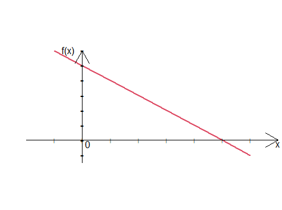

Kapitel 9 Funktionen und Optimierung
9.1 Funktionen
Mathematische Funktionen beschreiben Zusammenhänge zwischen ökonomischen Größen:
die Kosten eines Produktionsprozesses abhängig von der produzierten Menge,
den Gewinn abhängig von dem Absatzvolumen und dem Preis eines Produktes,
den Nutzen eines Konsumentes in Abhängigkeit von der konsumierten Mengen.
Definition 9.1 (Funktion) Definition (Funktion)
Eine ist Funktion ( \(f\) ) eine Vorschrift, die jedem Elementen einer Menge (Definitionsbereich dieser Funktion, \(D_f\) ) eindeutig ein Element einer anderen Menge (Wertebereich dieser Funktion, \(W_f\) ) zuordnet. Man schreibt: \[f: D_f \rightarrow W_f.\] Meist sind \(D_f\) und \(W_f\) Intervalle auf \(\mathbb R\), können aber bspw. \(\mathbb N\) oder \(\mathbb Q\) oder deren Teilmengen darstellen.
Funktionen können in unterschiedlicher Weise beschrieben werden. Meist werden sie in tabellarischer (Wertetabelle), graphischer (Funktionsgraph) oder analytischen Form (Gleichung) dargestellt.
Beispiel 9.1 (Funktionen) Beispiel (Funktionen)
Eine lineare Funktion \(f\):
- analytisch: \[f(x)=10-2x,\]
- graphisch:

- tabellarisch \[\begin{array}{c|c} x&f(x)\\\hline -1& 12\\ 0&10\\ 1&8\\ \ldots&\ldots\\\hline \end{array}\]
Weiter Beispiele für Funktionen in analytischer Schreibweise: \[f(x) = x^2,\] \[f(x) = 2^x.\]
9.2 Lineare und quadratische Funktionen, Polynome
Lineare und quadratische Funktionen werden häufig verwendet um Erlös- und Kostenstruktur eines Unternehmens zu modellieren.
Beispiel 9.2 (Kostenfunktionen) Beispiel (Lineare Kostenfunktion)
Ein Betrieb weist folgende Kennzahlen für den Monat Juni auf: Fixkosten € 6 400,- Variable Kosten pro Mengeneinheit € 3,20. Bezeichnet \(x\) die produzierte Menge, dann hat die Kostenfunktion für die Produktion in Juni folgende Form: \[K(x) = 6400 + 3,20x.\] Dem entsprechend belaufen die Kosten der Produktion von bspw. 4000 Einheiten auf \[K(4000)=6400 + 3,20\cdot 4000= 19200.\]
Definition 9.2 (Lineare Funktion) Definition (Lineare Funktion)
Eine lineare Funktion \(f:\mathbb R \rightarrow \mathbb R\) hat die Form: \[f(x)=ax+b,\] wobei \(a,b\) sind konstante reele Zahlen, Parameter der linearen Funktion. Die Konstante \(a\) wird als Steigung bezeichnet, die Konstante \(b\) als Achsenabschnitt.
Die Steigung eine Gerade ist das Verhältnis zwischen der Änderung in \(y=f(x)\) ( \(\Delta y\) ) zu der Änderung in \(x\) ( \(\Delta x\) ). Also \(a=\frac{\Delta y}{\Delta x}\).
Der Graph einer linearen Funktion ist eine Gerade.
positives \(a\) in a) und c); negatives \(a\) in b); \(b\) = 0 in a) und b), positives \(b\) in c).
In dem obigen Beispiel mit der Kostenfunktion \(a=3,20\) (also die variablen Kosten pro Stück) und \(b=6400\) (also die Fixkosten, die unabhängig von der Produktion, anfallen). Die Produktionskosten sind in dem Fall durch die entsprechende lineare Funktion beschrieben.
In dem nächsten Beispiel wird eine quadratische Funktion benötigt, um den Erlös eines Monopolisten zu beschreiben.
Beispiel 9.3 (Gewinnfunktionen) Beispiel (Gewinnfunktion eines Monopolisten)
Die Marketing-Abteilung eines Monopolisten ermittelt folgende inverse Nachfragefunktion (auch Preis-Absatz-Funktion genannt):\[p(x)=1560 - 12x,\] wobei \(x\) ist die nachgefragte Menge und \(p(x)\) ist der Preis. Die Firma hat lineare Kosten der Form: \[K(x)=747+60x.\]
Da der Monopolist per Definition der einzige Akteur in dem Markt ist, wählt er die Menge \(x\), die er produziert, aus, diese steht dann im Markt zur Verfügung und somit bestimmt den Preis.
Der Erlös des Monopolisten ist dann (Preis mal Menge): \[E(x)=p(x)\cdot x = (1560 -12 x)x = -12x^2 + 1560x\] ist eine quadratische Funktion in der produzierten Menge \(x\).
Der Gewinn des Monopolisten ist (Erlös minus Kosten): \[\pi(x) = E(x) - K(x)= -12x^2 + 1560x - (747+60x) = -12x^2 + 1500 x - 747\] ist auch eine quadratische Funktion in der produzierten Menge \(x\).
Definition 9.3 (Quadratische Funktion) Definition (Quadratische Funktion)
Eine quadratische Funktion \(f:\mathbb R \rightarrow \mathbb R_+\) hat die Form: \[f(x)=ax^2+bx +c,\] wobei \(a,b, c\) sind konstante reele Zahlen, Parameter der quadratischen Funktion.
Der Graph einer quadratischen Funktion ist eine Parabel.
positives \(a\) in (a); negatives \(a\) in (b).
Im obigen Beispiel die Gewinnfunktion \(\pi(x)\) ist eine quadratische Funktion mit den Parametern \(a=-12\), \(b=1500\) und \(c=-747.\)
Definition 9.4 (NUllstellen) Definition (Nullstellen einer quadratischen Funktion)
Die Nullstellen einer quadratischen Funktion bestimmt man in dem man die Gleichung \({\color{red}a}x^2+{\color{blue}b}x +{\color{green}c}=0\) löst. Die Nullstellen können mit Hilfe der so genannten \(abc\)-Formel bestimmt werden:
\[x_{1,2}=\frac{-{\color{blue}b}\pm\sqrt{{\color{blue}b}^2-4{\color{red}a}{\color{green}c}}}{2{\color{red}a}}.\]
Alternativ kann die Gleichung in \(pq\)-Form überführt werden: \[ax^2+bx +c=0 \rightarrow x^2+{\color{violet}p}x +{\color{orange}q}=0, ~~~p=\frac ba, q=\frac ca,\]
und dann mit Hilfe der \(pq\)-Formel gelöst werden:
\[x_{1,2}=-\frac {\color{violet}p}2\pm\sqrt{\left(\frac {\color{violet}p}2\right)^2-{\color{orange}q}}.\]
Beispiel 9.3 (Gewinnfunktionen) Beispiel (Break-even-point für den Monopolisten)
Für unseren Monopolisten können wir mit Hilfe der Formel für die Nullstellen einer quadratischen Funktion, den Break-even-point, also die Produktionsmenge, ab der sein Gewinn zum ersten Mal positiv wird, bestimmen.
Da \(\pi(x)=-12x^2 + 1500 x - 747\) müssen wir die Gleichung \({\color{red}{-12}}x^2 + {\color{blue}{1500}} x {\color{green}{-747}}=0\) lösen. - mit \(abc\)-Formel: \[x_{1,2}=\frac{-{\color{blue}{1500}}\pm\sqrt{{\color{blue}{1500}}^2-4({\color{red}{-12}})({\color{green}{-747}})}}{2({\color{red}{-12}})}\rightarrow x_1=0,5,~~x_2=124,5.\]
- mit \(pq\)-Formel lösen wir \(x^2{\color{violet}{-125}}x + {\color{orange}{62.25}}=0\): \[x_{1,2}=-\frac {\color{violet}{-125}}2\pm\sqrt{\left(\frac {\color{violet}{-125}}2\right)^2-{\color{orange}{62.25}}}\rightarrow x_1=0,5,~~x_2=124,5.\]
Also liegt der Break-even-Point bei \(x=0,5\). Produziert der Monopolist mehr als 0.5, wird sein Gewinn positiv. Ab der Produktionsmenge 124,5 fällt der Gewinn wieder ins Negative:
Manchmal sind sogar höhere Potenzen von \(x\) notwendig um ökonomische Zusammenhänge zu modellieren. Im Allgemeinem spricht man dann von Polynomen in \(x\).
Definition 9.5 (Polynome) Definition (Polynom \(n\)-ten Grades)
Ein Polynom vom Grad \(n\) ist eine Funktion der Form: \[f(x) = a_0 + a_1x + a_2 x^2 + \ldots + a_n x^n\] Dabei sind die Parameter \(a_0\) bis \(a_{n}\) reele Zahlen mit \(a_n\not=0\).
Lineare Funktionen sind Polynome ersten Grades. Quadratische Funktionen sind Polynome zweiten Grades.
Beispiel 9.4 (Produktionsfunktionen) Beispiel (Produktionsfunktion)
In der Landwirtschaft führt eine Erhöhung des Düngers bei gleicher Bodenfläche zunächst zu einer starken Zunahme und später zu einer geringeren Zunahme des Gesamtertrags. Dies führt zu einer s.g. ertragsgesetzlichen Produktionsfunktion, die mittels eines Polynoms dritten Grades in der Inputmenge \(s\) modelliert wird. Bspw. folgende Produktionsfunktion: \[x(s)=0,001\cdot (-0,05s^3 +8 s^2 + 20s), ~~0\leq s \leq 110.\]
9.3 Stückweise definierte Funktionen
Eine stückweise definierte Funktion beschreibt eine Funktion, die aus mehreren unterschiedlichen Funktionsstücken für verschiedene Bereiche oder Intervalle der Eingabewerte (\(x\)-Werte) besteht.
9.5 Ableitung
Wir wissen bereits, wie wir die Steigung einer Geraden berechnen können. Wenn wir aber eine Kurve haben (siehe Beispiel von Gewinnfunktion), deren Steigung wir bestimmen wollen? Das Problem dabei ist, dass jeder Punkt dieser Kurve eine andere Steigung besitzt. Mit Hilfe der Ableitungen sind wir in der Lage, die Steigung einer Kurve in einem Punkt zu berechnen.
Die Idee dabei ist, eine Tangente zu der Kurve in dem Punkt, in dem wir die Steigung bestimmen wollen, zu ziehen und dann die Steigung dieser Tangente zu berechnen.
Definition 9.6 (Differentialquotient) Definition (Differentialquotient)
Die Steigung der Tangente im Punkt \(x_0\) wird als Differentialquotient (oder auch momentane Änderungsrate) bezeichnet und wird als Grenzwert der Sekantensteigung (Differenzenquotient auch mittlere Änderungsrate) angenähert, wobei man \(\Delta x=h\) immer kleiner werden lässt:
- \(Differenzenquotient ~~a= \frac{f(x_0+h) - f(x_0)}{h}\)
- \(Differenzialquotient =\lim_{\Delta x=h\rightarrow 0}\frac{f(x_0+h) - f(x_0)}{h}\)
9.5.1 Einige Ableitungsregeln
Damit man \(f'(x)\) als den entsprechenden Grenzwert nicht immer wieder aufs Neue kalkulieren muss, hat man einige Ableitungsregeln hergeleitet:
Definition 9.7 (Ableitungsregeln)
Ableitungsregeln| (Funktions-)Typ | Funktion | Ableitung |
|---|---|---|
| 1.konstante Funktion | \(f(x)=c\) | \(f^\prime(x)=0\) |
| 2.lineare Funktion | \(f(x)=ax + b\) | \(f^\prime(x)=a\) |
| 3.Potenzfunktion | \(f(x)=x^n\) | \(f^\prime(x)=n\, x^{n-1}\) |
| 4.Skalierung | \(g(x)=c\, f(x)\) | \(g^\prime(x)=c\,f^\prime(x)\) |
| 5.Summenregel | \(f(x)=g_1(x) + g_2(x)\) | \(f^\prime(x) = g_1^\prime(x) + g_2^\prime(x)\) |
| \(f(x)=\sum_{i=1}^n g_i(x)\) | \(f^\prime(x) =\sum_{i=1}^n g_i^\prime(x)\) | |
| 6.Produktregel | \(f(x)=g(x)\, h(x)\) | \(f^\prime(x) = g^\prime(x) h(x) + g(x) h^\prime(x)\) |
| 7.Kettenregel | \(f(x)=g(h(x))\) | \(f^\prime(x)=g^\prime(h(x))\,h^\prime(x)\) |
Beispiel 9.5 (Ableitung)
- \(f(x) = 0,1x^4 -x^3 + 3x^2 - 5x +10 \rightarrow f'(x) = 0,4x^3-3x^2 + 6x-5.\) \(\text{ (Ableitungsregeln 1-5)}\)
- \(f(x) = (2x-1)(3-5x^2) \rightarrow f'(x) = \color{red}{(2x-1)'}(3-5x^2) + (2x-1) \color{blue}{(3-5x^2)'} \\= \color{red}{2}\cdot(3-5x^2) + (2x-1)\cdot \color{blue}{(-10x)}=\ldots\) \(\text{ (Ableitungsregeln 6 + 1-5)}\)
- \(f(x) = (1-2x)^2 \rightarrow f'(x) =\big(\color{red}(\color{blue}{1-2x}\color{red}{)^2}\big)\color{blue}'\cdot\color{blue}{(1-2\color{orange}x)\color{orange}'} =\color{red}{2\cdot(\color{blue}{1-2x})}\cdot\color{orange}{(-2)}=\ldots\) \(\text{ (Ableitungsregeln 7 + 1-5)}\)
9.6 Einfache Optimierungsprobleme
Optimierung beschäftigt sich damit, optimale Parameter eines Systems zu finden. “Optimal” bedeutet, dass eine Zielfunktion minimiert oder maximiert wird. Die einfache Optimierungsprobleme beinhalten das Auffinden eines Minimums oder Maximums einer Funktion.
In ökonomischem Kontext spielen Optimierungsprobleme eine entscheidende Rolle bei bspw. Kostenmierung, Gewinnmaximierung und Nutzenmaximierung.
In der obigen interaktiven App zu Ableitung kann man beobachten, dass unsere Gewinnfunktion ihren Maximum in dem Punkt annimmt, wo ihre Ableitung gleich Null ist ( \(\pi'(x^*)=0\) ). Intuitiv: wenn \(\pi'(x)>0\) bedeutet dies, dass der Gewinn noch wächst, bzw. wenn \(\pi'(x)<0\) sinkt der Gewinn, bei \(\pi'(x)=0\) wird ihr Maximum erreicht.
Im Allgemeinen gilt:
Definition 9.8 (Stationäre Punkte) Definition (Nullstellen der Ableitung und stationäre Punkte)
Nullstellen der Ableitung entsprechen den sogennanten stationären Punkten der Funktion (bezeichnet als \(x^*\)). Diese stationären Punkte beinhalten Maxima a), Minima b) und Wendepunkte c):
Um zu bestimmen, ob es sich um ein Maximum, Minimum oder einen Wendepunkt handelt, kann man z.B. auf die graphische Darstellung der Funktion zurückgreifen oder man zieht formale Kriterien hinzu. Hierfür wird die zweite Ableitung ( \(f''(x)\), also die Ableitung der Ableitung) in allen stationären Punkten \(x^*\) berechnet. Ist \(f''(x^*)<0\) (wie in d) handelt es sich um eine Maximumstelle, Ist \(f''(x^*)>0\) (wie in e) handelt es sich um eine Mimnimumstelle.
Beispiel 9.6 (Gewinnmaximum des Monopolisten) Beispiel (Gewinnmaximum des Monopolisten)
Unsere Gewinnfunktion lautet: \[\pi(x)=-12x^2 + 1500 x-747,\] Die Ableitung ist (siehe die Ableitungsregeln): \[\pi'(x)=-12\cdot 2x + 1500 = -24x+1500.\] Die Nullstellen der Ableitung sind: \[-24x + 1500=0 \rightarrow 1500 = 24x \rightarrow x^* = \frac {1500}{24} = 62,5.\] Da \(\pi''(x) = -24\) und somit immer \(<0\) handelt es sich um eine Maximumstelle.
Quiz Optimierung